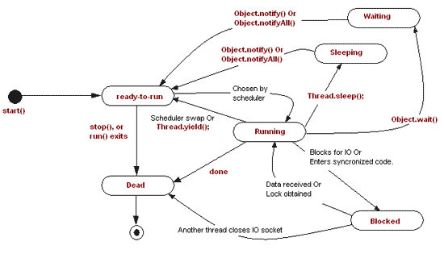

In previous post I have covered almost all the terms related to Java threads. Here we will learn Thread life cycle in java, we’ll also see thread scheduling.
Recommended Reads:
Thread Life cycle in Java
- The start method creates the system resources, necessary to run the thread, schedules the thread to run, and calls the thread’s run method.
- A thread becomes “Not Runnable” when one of these events occurs:
- If sleep method is invoked.
- The thread calls the wait method.
- The thread is blocking on I/O.
- A thread dies naturally when the run method exits.
Below diagram clearly depicts the various phases of thread life cycle in java.

2. Thread Scheduling
- Execution of multiple threads on a single CPU, in some order, is called scheduling.
- In general, the runnable thread with the highest priority is active (running)
- Java is priority-preemptive
- If a high-priority thread wakes up, and a low-priority thread is running
- Then the high-priority thread gets to run immediately
- Allows on-demand processing
- Efficient use of CPU
2.1 Types of scheduling
- Waiting and Notifying
- Waiting [wait()] and notifying [notify(), notifyAll()] provides means of communication between threads that synchronize on the same object.
- wait(): when wait() method is invoked on an object, the thread executing that code gives up its lock on the object immediately and moves the thread to the wait state.
- notify(): This wakes up threads that called wait() on the same object and moves the thread to ready state.
- notifyAll(): This wakes up all the threads that called wait() on the same object.
- Running and Yielding
- Yield() is used to give the other threads of the same priority a chance to execute i.e. causes current running thread to move to runnable state.
- Sleeping and Waking up
- nSleep() is used to pause a thread for a specified period of time i.e. moves the current running thread to Sleep state for a specified amount of time, before moving it to runnable state. Thread.sleep(no. of milliseconds);
2.2 Thread Priority
- When a Java thread is created, it inherits its priority from the thread that created it.
- You can modify a thread’s priority at any time after its creation using the setPriority method.
- Thread priorities are integers ranging between MIN_PRIORITY (1) and MAX_PRIORITY (10) . The higher the integer, the higher the priority.Normally the thread priority will be 5.
2.3 isAlive() and join() methods
- isAlive() method is used to determine if a thread is still alive. It is the best way to determine if a thread has been started but has not yet completed its run() method. final boolean isAlive();
- The nonstatic join() method of class Thread lets one thread “join onto the end” of another thread. This method waits until the thread on which it is called terminates. final void join();
3. Blocking Threads
- When reading from a stream, if input is not available, the thread will block
- Thread is suspended (“blocked”) until I/O is available
- Allows other threads to automatically activate
- When I/O available, thread wakes back up again
- Becomes “runnable” i.e. gets into ready state
4. Grouping of threads
- Thread groups provide a mechanism for collecting multiple threads into a single object and manipulating those threads all at once, rather than individually.
- To put a new thread in a thread group the group must
- be explicitly specified when the thread is created
- – public Thread(ThreadGroup group, Runnable runnable)
- – public Thread(ThreadGroup group, String name)
- – public Thread(ThreadGroup group, Runnable runnable, String name)
- A thread can not be moved to a new group after the thread has been created.
- When a Java application first starts up, the Java runtime system creates a ThreadGroup named main.
- Java thread groups are implemented by the java.lang.ThreadGroup class.
Target keywords: thread life cycle in java, java threading tutorial, using threads in java, javathread run.
Leave a Reply